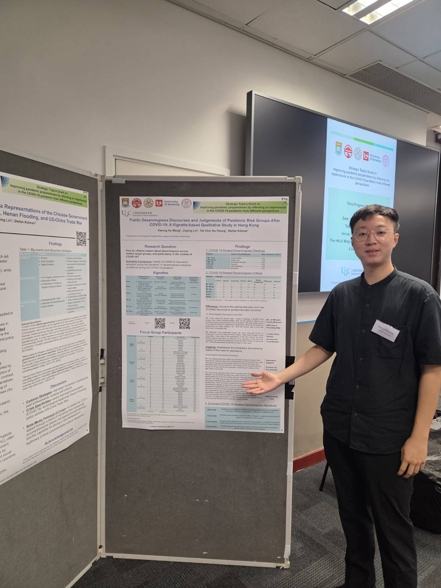

Welfare & solidarity
How people judge who deserves support, and how those judgements shape welfare legitimacy.
Hong Kong · Lingnan University
Researcher in sociology
& social policy.
I study how people make sense of social life, from judgements about welfare to the culture of competitive sport.
I’m a Research Officer at Lingnan University, working with Professor Stefan Kühner on welfare deservingness and the Triple Transition survey project.

What I work on
How people judge who deserves support, and how those judgements shape welfare legitimacy.
Group dynamics, hierarchies, and identities within the competitive yo-yoing subculture.
An interest in the sociology of finance, alongside cultural sociology and ethnographic approaches.
Beyond research
From university tutorials to yo-yo classes in schools and community centres, teaching is another part of my work.
I was a university teaching assistant from 2022 to 2024 and have four years of freelance yo-yo coaching experience.